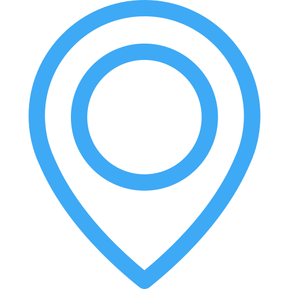

Наследството на София
Карта на Паметниците на Културата в Централната Градска част на София, разработена от Morphocode.
За Картата
Картата е разработена от студио Morphocode и визуализира данни за над 800 сгради-паметници на културата на територията на Централна Градска Част в София.
Разнообразни по мащаб и типология, тези културни ценности са важен елемент от идентичността и градоустройствената структура на столицата. Сред тях има архитектурно-строителни, художествени и исторически паметници на културата с различна степен на значимост.
Информацията за обектите в картата е с публичен характер и се съдържа в Националния Регистър на Недвижимите Културни Ценности, поддържан от НИНКН.

Обхват
Централна Градска Част включва територията в т.нар. голям ринг на София, обединяващ булевардите "Сливница", "Скобелев", "инж.Иван Иванов", "Пенчо Славейков", "Евлоги и Христо Георгиеви", "Ген. Д. Николаев".
В обхвата ѝ влизат няколко зони, изграждащи система от групови паметници на културата: "Зона на исторически развилия се обществен център", "Зона на старите пазарища", жилищна зона "Докторски паметник", зона "Руски паметник - Буката", жилищна зона "Център", Зона на Работническото движение, жилищна зона "Дондуков - Сливница".
Данни
Списъкът със сгради-паметници на културата , както и информация за техния статут, вид, категория и адрес се съдържа в "Публичния Регистър на Недвижимите Културни Ценности", поддържан от Националния Институт за Недвижимо Културно Наследство.
Информация за обектите на територията на Централна Градска Част в София ни бе предоставена на хартиен носител в отговор на писмена молба за достъп до публична информация.
Възможнo е да има непълноти и неточности в използваните данни. За официални справки относно статута на обекти от списъка, заинтересованите лица следва да се обръщат към НИНКН.
Реализация
Техническата Реализация на проекта включва шест стъпки

Обработка на Данни Получените Данни се структурират и съхраняват в машинен формат, подходящ за анализ и визуализация.
Гео-Кодиране Въз основа на адрес и кадастрални данни се определя геометрията и географската локацията на всеки обект в списъка.

Верификация Информацията за неясни обекти се прецизира след справка с досието на обекта, съхранявано в Архива на НИНКН.

Пространствен Анализ Извличат се статистически данни и се добавя информация за зона на опазване чрез извършване на гео-пространствен анализ.

Картографиране Пространствените данни се отразяват на уеб карта и се стилизират според атрибутите си.

Уеб Приложение Картата и списъкът с обекти се обединяват в уеб приложение, базирано на отворени уеб стандарти.
Използвани Технологии
Настоящото уеб приложение е разработено от студио Morphocode. В разработката на проекта са използвани програмни библиотеки с отворен код и данни от Mapbox и Open Street Map.
За анализ и обработка на данни са използвани Pandas и Geopandas. Картата е базирана на javascript библиотеката Mapbox-GL, a връзката между компонентите e изградена с d3-js. "Отзивчивият" дизайн е реализиран с basscss. Използвани са икони по дизайн на Freepik и разпространени от Flaticon.
Благодарности
Благодарим на арх. Милена Лозанова, арх. Галина Иванчева, арх. Ива Цаловска и Илия Мечков за любезното съдействие. Специални Благодарности на адвокат Мария Дерелиева.
Morphocode работи на границата между дизайн и технологии. Студиото е основано от арх. Грета Димитрова и арх. Кирил Мандов и специализира в проучване на градската среда, анализ и визуализация на данни.
Morphocode са автори на една от първите приставки за Grasshopper3D — Rabbit и са водили работилници по Дигитална Архитектура в класа на Бен ван Беркел в Staedelschule, Франкфурт и университета по архитектура IUAV във Венеция.
Работата на студиото е отразена в Yahoo News, Citylab, Inhabitat, DesignBoom и много други, а проектът им Urban Layers е включен в поредицата "The Best American Infographics", излизаща под редакцията на американския журналист и носител на "Пулицър" Gareth Cook.
Още от Morphocode
Градски Слоеве
Карта на историческите пластове на Манхатън, която разкрива различни фрагменти от градската тъкан на Ню Йорк. Проектът е включен в класацията "Най-добрите Американски Инфографики на 2015".
Пулсът на Мелбърн
Изследване на пешеходната активност в централната част на град Мелбърн чрез анализ на данни от сензори за движение.

Morphocode Академия
Онлайн Курсове по анализ и визуализация на данни, информационни графики и градска информатика.
Зареждане...